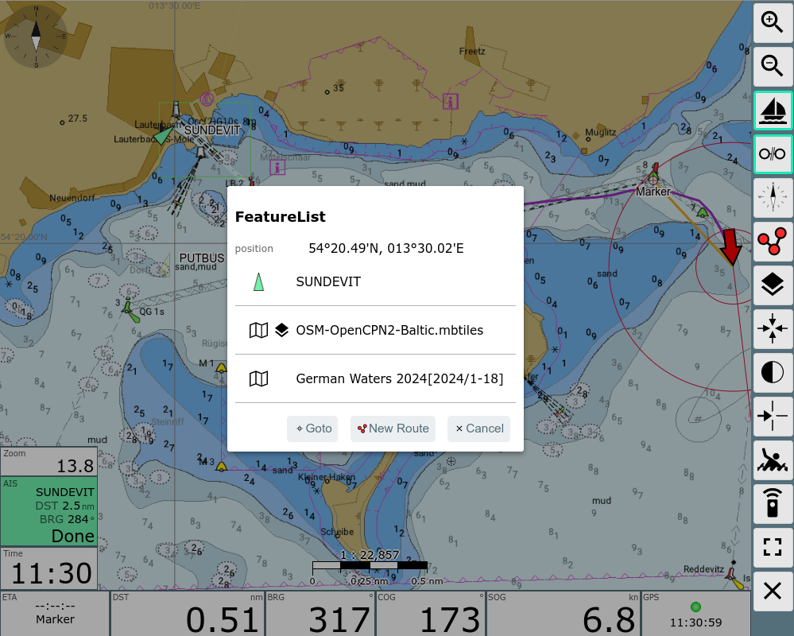
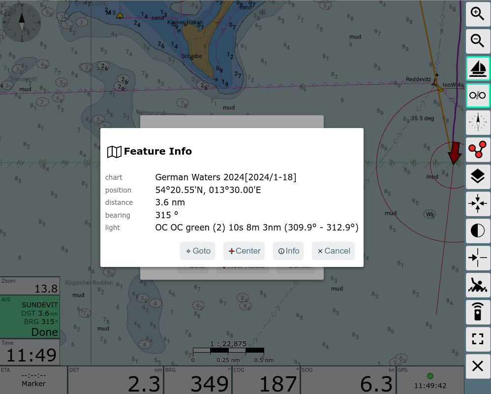
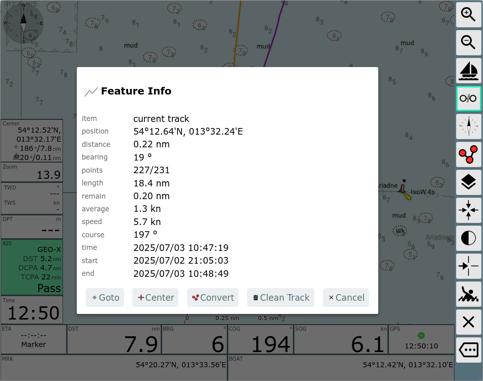
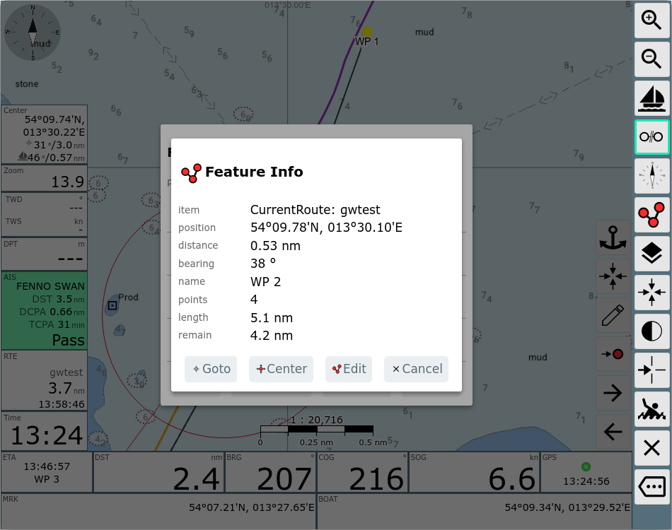
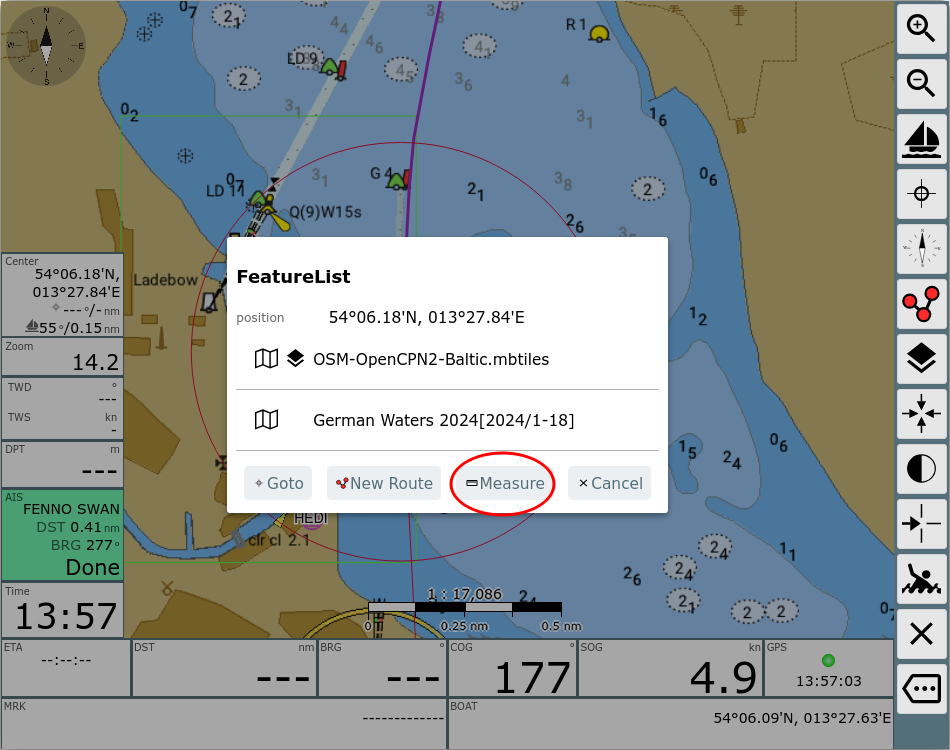
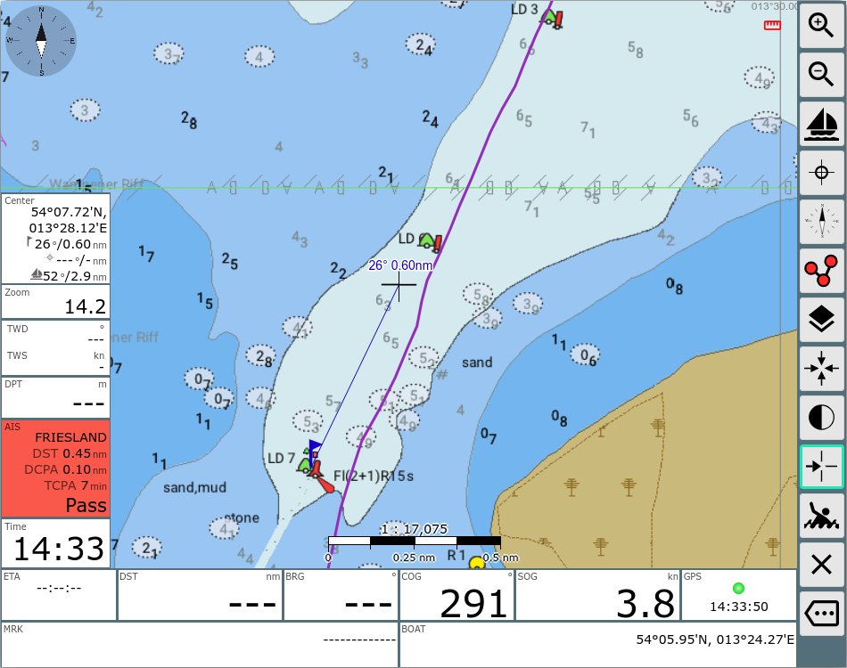
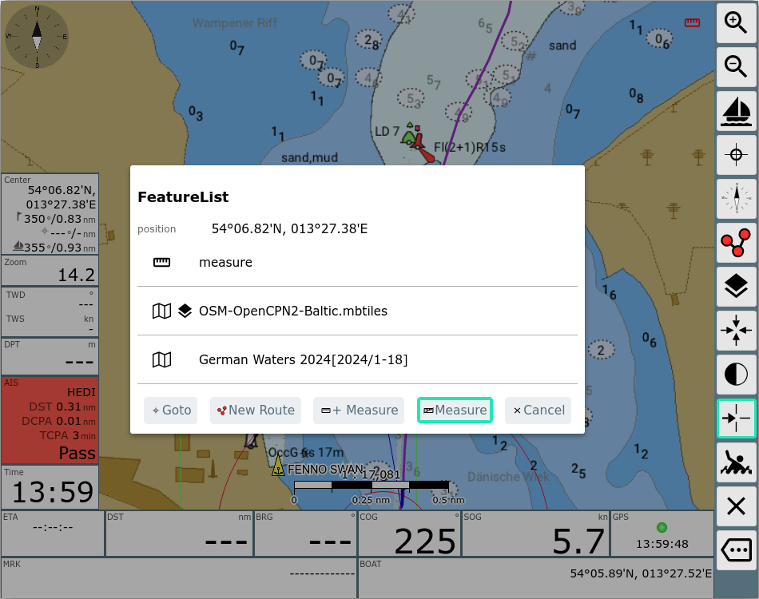
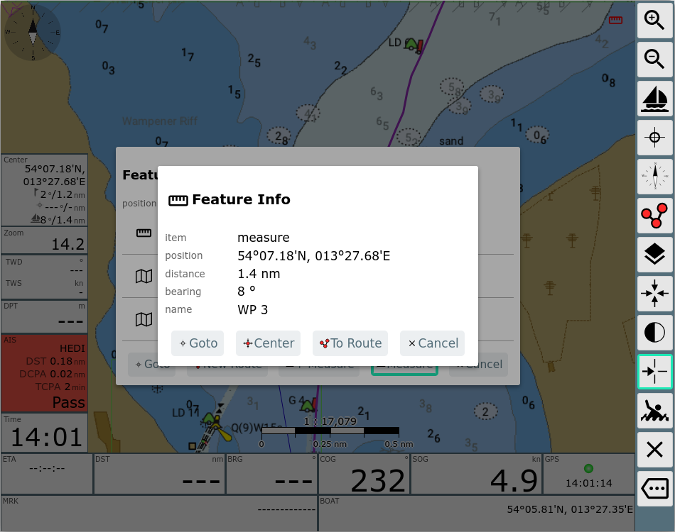

Diese Seite ist die im Normalfall für die Navigation genutzte
Darstellung.
Dieses Bild zeigt einen gesetzten Wegpunkt (Marker locked) – das Boot
ist auf Kurs, und der Kartenmittelpunkt wird permanent auf das Boot
zentriert.
| Icon | Name | Funktion |
| ZoomIn | Hereinzoomen | |
| ZoomOut |
Herauszoomen |
|
| LockPos |
Kartenmittelpunkt auf Bootsposition setzen und dort halten
(Karte bewegt sich mit dem Boot). Nur aktivierbar bei gültiger Position. |
|
| StopNav |
Navigation beenden. Nur sichtbar, wenn momentan ein Wegpunkt oder eine Route aktiv ist. |
|
| LockMarker |
Navigation starten. Der aktuelle Kartenmittelpunkt (Fadenkreuz) wird zum Ziel-Wegpunkt. Nur sichtbar, wenn momentan keine Navigation aktiv ist. |
|
| CourseUp |
Karte drehen, so das die Kurs-Voraus Richtung oben ist. |
|
| ShowRoutePanel |
Wechsel zum Routen-Editor
(auch durch Klick auf eine angezeigte Route) |
|
| FullScreen | Fullscreen ein/aus (nur auf unterstützten Browsern) | |
| CenterAction | Die gleiche Aktion wie beim Klick auf die Karte (bezogen auf den Kartenmittelpunkt - das Fadenkreuz). Zeigt die Liste der Features an dieser Position. | |
| MOB |
Mann über Bord (siehe Hauptseite) |
|
| Overflow |
Zeige eine zweite Liste von Buttons falls der Bildschirm zu
klein für alle Buttons ist. Nur sichtbar, wenn unter
Settings/Layout nicht "2 Button columns" ausgewählt ist |
|
| NavOverlays | Aktivieren und Deaktivieren von Overlays | |
| Night | Aktivieren/Deaktivieren des Nachtmodus (ab 20210619, wenn Settings/Buttons/night mode on navpage gesetzt ist) | |
| GpsCenter | Zentriere die Karte auf die Bootsposition (ab 20210619) | |
| Dim |
Dim Mode. Der Bildschirm wird abgedunkelt und alle Buttons
werden inaktiv. Aufheben des Zustandes über Click auf eine
beliebige Stelle auf dem Bildschirm. Der Button ist nur unter Android oder bei Nutzung des BonjourBrowsers (Version 1.5) sichtbar. Es wird dann auch der Bildschirm insgesamt gedimmt. Darüber kann der Stromverbrauch bei Nicht-Nutzung verringert werden - oder eine Überlast bei großer Helligkeit und hohen Temperaturen vermieden werden. |
|
| RemoteChannel | Auswahl des Fernsteuerungskanals sowie des Fernsteuerungsmodus (senden/empfangen). | |
| Cancel | Zurück zur Hauptseite |
Dies ist die Navigationsansicht. In der Mitte befindet sich die Kartenansicht mit der Schiffsposition (roter Pfeil). Die gelben und grünen Dreiecke mit Pfeilspitzen sind empfangene AIS Ziele in der Nähe (10nm, einstellbar) mit ihrem aktuellen Kurs sowie Name oder MMSI. Die organgefarbene Linie zeigt zum aktiven Wegpunkt. Die gepunktete Linie zeigt den Kurs vom Start der Navigation zum Wegpunkt (Sollkurs). Die Karte kann mit den normalen Gesten verschoben oder gezoomt werden, zum Zoomen können auch die Buttons +/- auf der rechten Leiste benutzt werden.
Um das Schiff kann man bis zu 3 Kreise in entsprechenden Entfernungen einstellen um Abstände zu schätzen (Über Einstellungen->Navigation Display, Standard 300m und 1000m).
(ab 202011xx) In Vorausrichtung ("Course Vector") kann man die Länge der Linie in den Settings (Navigation/Boat Course Vector Length) einstellen. Man stellt die Sekunden ein, die Länge berechnet sich dann aus der aktuellen Geschwindigkeit (default: 10 Minuten). Die Dicke der Kursvektoren wird über die Einstellung für die Navigationskreise bestimmt.
Die gleiche Einstellung gilt auch für die Kursvektoren der AIS Ziele.
Für die Ausrichtung des Schiffes und die Kursvektoren gibt es verschiedene Modi (ab 20220421) - setzbar unter Einstellungen->Navigation->boat direction (siehe auch die Diskussion dazu auf GitHub):
| Einstellung | Bedeutung | Symbol-Name |
| cog | Ausrichtung und Course Vector basieren auf COG | boatImage (Pfeil) |
| hdt | Ausrichtung basiert auf Heading True (fallback auf COG wenn nicht vorhanden), Course Vector auf COG. Optional HDT als gepunktete Linie (Einstellungen->navigation->add dashed vector for hdt/hdm) | boatImageHdg (Boot) |
| hdm | Ausrichtung basiert auf Heading Magnetic (fallback auf COG wenn nicht vorhanden), Course Vector auf COG. Optional HDM als gepunktete Linie (Einstellungen->navigation->add dashed vector for hdt/hdm) | boatImageHdg (Boot) |
In den Einstellungen kann ausserdem noch eine Erkennung für "Boot nicht in Bewegung" aktiviert werden (Einstellungen->Navigation->zero SOG detect). Wenn das aktiviert ist, wird bei einer Geschwindigkeit < 0.2 kn (Einstellungen->Navigation->zero SOG detect below (kn)) das Boot Symbol geändert (boatImageSteady, roter Kreis).
Wenn (wie im Bild) der Schiff-Button einen grünen Rand hat ("Schiff lock"), ist die Karten-Mitte auf die Schiffsposition fixiert und springt immer wieder dahin zurück.
Ab Version 20230614 kann unter Einstellungen/Map "allow move when
locked" ein Verschieben der Karte im "Lock" Modus zugelassen werden.
Hierbei kann man die Karte verschieben und nach dem Loslassen wird die
Schiff an der Stelle des Bildschirmes gehalten, wo es sich beim
Loslassen befindet.
Allerdings wird die Position ggf. so verschoben, das das Schiff wieder
auf der Karte sichtbar ist.
Ab Version 20210619 kann die Boot-Position auch von Anfang an auf eine
beliebige andere Stelle des Bildschirmes fixiert werden. Dazu wählt man
unter Einstellungen/Map/boat lock mode
entweder "current" oder "ask" aus.
Bei "current" wird das Boot auf der Stelle am Bildschirm fixiert, an der
es sich befindet, wenn "Lock" aktiviert wird. Die Karte wird dann
entsprechend verschoben.
Bei "ask" wird bei jedem "Lock" Vorgang ein Dialog gezeigt:

AIS Ziele bis zu einer bestimmten Entfernung zur aktuellen Position
werden in der Karten zusammen mit einigen Informationen dargestellt.
Diese kann man unter Einstellungen, AIS
anpassen. Ausserdem werden einige Bewegungsvektoren und eine berechnete
Position basierend auf dem Alter der AIS Information (als Schatten)
angezeigt.
Die Symbole für die AIS-Ziele können durch eigene
Symbole angepasst werden, bei Bedarf unterschiedlich je nach
AIS-Schiffsklasse oder navigational status. Für das eigene Boot und für
die AIS-Ziele wird ein Kurs-Vektor gezeichnet, dessen Ende die Position
nach 10 Minuten (einstellbar) markiert.
Ab 20230614 werden auch AIS Atons dargestellt (dazu muss in den Einstellungen/AIS
"only show moving targets" ausgeschaltet und "show other" eingeschaltet
sein). Ausserdem ist es möglich eine geschätzte aktuelle Position des
AIS Ziels abhängig vom Alter der Information, Kurs und Geschwindigkeit
anzuzeigen (Einstellungen/AIS "show estimated position").
Es kann ausserdem gewählt werden, ob die Ausrichtung des AIS Zieles nach
HDG erfolgt (sofern empfangen - Einstellungen/AIS "use heading for
direction") - sonst nach COG. Der Course Vector eines AIS Zieles wird
immer nach COG ausgerichtet.
Es gibt unterschiedliche Symbole für die AIS Ziele - für Details siehe
unter "Nutzerdefinierte Icons".
Durch Klick auf ein AIS-Ziel (oder auf die Anzeige des nächsten Zieles in den Anzeige-Bereichen) erhält man alle Informationen zu diesem Ziel und kann zur Liste aller AIS-Ziele navigieren.
Eine grundsätzliche Einführung in das Thema true und relative motion vectors und wie diese in der Navigation verwendet werden, ist zu finden unter
AvNav stellt für AIS-Targets deren voraussichtlichen Track über Grund dar, wenn settings->AIS->use-course-vector aktiviert ist. Dazu wird ausgehend von der zuletzt bekannten Position des Targets eine Linie gezeichnet in Richtung des Kurs-über-Grund (COG) des Targets und der Länge Fahrt-über-Grund (SOG) multipliziert mit boat-course-vector-length. Diese Linie ist der sog. true motion vector, kurz TMV.

Zusätzlich können in AvNav relative motion vectors dargestellt werden. Dazu in settings->AIS->relative-motion-vector-range einen Wert größer als Null setzen, dann werden für Targets, die sich im Umkreis dieser Distanz befinden zusätzlich RMVs als gestrichelte Linien angezeigt.

Der RMV zeigt die Bewegung des Targets relativ zum eigenen Schiff, er ergibt sich als Differenz zwischen TMV und dem eigenen Kurs-Vektor, sodass TMV, RMV und der eigene Kurs-Vektor ein Dreieck bilden. Zeigt der RMV eines Targets direkt auf das eigene Schiff, dann besteht die Gefahr einer Kollision. Ebenso kann man die Lage des CPA direkt aus dem RMV ablesen, man fällt das Lot vom eigenen Schiff auf den RMV.
Die RMVs entsprechen den Spuren, die die Targets auf einem Radarschirm hinterlassen würden.
Aktiviert man settings->AIS->curved-vectors, so wird eine eventuell in den AIS-Daten vorhandene rate-of-turn (ROT) ausgewertet und die Drehung des Targets bei der Darstellung der Vektoren berücksichtigt. Die TMVs und RMVs werden dann als gekrümmte Linien dargestellt. Die gekrümmten Vektoren zeigen eine potenzielle Kollision ggf. viel früher an als die ungekrümmten Vektoren.

Um CPA und Bewegungsvektoren zu berechnen, benutzt AvNav die von einem AIS Ziel empfangenen Daten (position, COG, SOG) und die Daten des eigenen Bootes (position, COG, SOG).
Vor Version 20250723 benutzte die Berechnung die Daten der AIS Ziele so, wie sie auf der Karten angezeigt werden und die Bootdaten von dem Zeitpunkt, wenn die Berechnung erfolgte.
AvNav berechnet:
Es werden auch die Zeiten berechnet, um diese Punkte zu erreichen.
Negative Zeiten bedeuten dabei, dass wir an diesem Punkt bereits vorbei
sind.
Abhängig davon wird entschieden, wie wir das Ziel passieren:
Basierend auf der berechneten DCPA (minimale Entfernung am CPA Punkt) und TCPA (Zeit bis zum CPA Punkt) setzt AvNav eine Warnung für das Ziel, wenn die Werte unter den konfigurierten Schwellwerten liegen.
Um zu entscheiden, welches Ziel im AisTargetWidget angezeigt wird und
für die Sortierung in der AIS liste wird für
jedes Ziel eine Priorität berechnet.
Die Priorität von hoch zu niedrig:
Auf diese Weise lassen sich die Ziele nach ihrer Bedeutung für die Navigation sortieren.
Die bisherige (vor Version 20250723) genutzte Berechnung hat einige Nachteile:
Ein AIS Ziel befindet sich normalerweise in Fahrt, und AIS Nachrichten werden nur in relativ großen Zeitabständen gesendet/empfangen. Ausserdem lädt der Anzeigeteil von AvNav (im Browser) die AIS Daten nur in bestimmten Abständen (settings/UpdateTimes/AIS - default 5 Sekunden). Damit werden die AIS Symbole auf der Karte an einer Position dargestellt, die sie einige Zeit in der Vergangenheit hatten. Und auch die darauf basierenden (CPA/Distance) Berechnungen sind damit nicht ganz korrekt - sie nutzen die Boot position/course/speed zur Zeit der Berechnung, und AIS Ziel position/course/speed von einem Zeitpunkt an dem die Nachricht vom Ziel versendet wurde.
Wenn man eine typische Situation hat mit einem Ziel, dem man sich annähert, wird man eine ständige Änderung in den berechneten CPA Werten erleben - auch wenn das Boot und das Ziel Kurs und Geschwindigkeit beibehalten.
Ab Version 20250723 bietet AvNav die Option (aktiv als default, settings/AIS/CPA from estimated), CPA und Bewegungsvektoren aus einer geschätzten Position des AIS Zieles zu berechnen. Diese Position ist die selbe, die als Schattensymbol auf der Karte dargestellt wird. Die Berechnung nimmt dabei an, dass das AIS Ziel Kurs und Geschwindigkeit beibehält und berücksichtigt das Alter der AIS Information.
Dieses Alter berücksichtigt die folgenden Zeiten:
Wenn man diese Berechnung nutzt, erhält man normalerweise einen konstanten CPA, wenn Boot course/speed und AIS Ziel course/speed gleich bleiben. In den meisten Fällen erhält man damit ein besseres Resultat.
Es gibt allerdings 2 Probleme, die man damit nicht lösen kann:
Da beide Berechnungen ihre Limitierungen haben, kann der Nutzer am Ende entscheiden, welche genutzt werden soll.
Ab Version 20250723 werden alle AIS Berechnungen in einem separaten Thread (worker) im Browser durchgeführt und werden bei jeder Positionsänderung wiederholt. In älteren Versionen wurden die Berechnungen nur ausgeführt, wenn neue AIS Daten abgerufen wurden.
Links befinden sich (von oben nach unten):
Die Darstellung des nächsten AIS Zieles (geringste momentane Entfernung) färbt sich rot, wenn eine CPA von 500m (einstellbar) unterschritten wird. Gelb bedeutet, dass nicht das nächste Ziel, sondern ein separat ausgewähltes Ziel (siehe unten AIS) angezeigt wird. Ein Klick auf diese Fläche oder ein AIS Ziel in der Feature Liste (nach Klick auf die Karte) AIS Info .
(ab 202011xx) Die verwendeten Symbole für das Boot und die AIS Ziele können bei Bedarf über eine Datei images.json angepasst werden. Ausserdem können die AIS Symbole in den Einstellungen (AIS/Icon Scale) in ihrer Größe verändert werden, ein Rand kann ebenfalls hinzugefügt werden (AIS/Border Width). Falls die Berechnungen der AIS Kursvektoren zu aufwändig ist (Browser wird zu langsam), kann sie in den Einstellungen abgeschaltet werden (AIS/AIS Use Course Vector).
Im unteren Bereich der Navigationsseite befindet sich die Anzeige der wichtigsten Navigationsdaten ("Widgets"). Links die Daten des aktuellen Wegpunktes (Marker):
Danach folgen die Schiffsdaten:
Je nach Breite des Bildschirms und den Einstellungen für die Schriftgröße der "Widgets" werden bis zu 2 Reihen an Daten angezeigt (unter Settings einstellbar). Daten, die nicht mehr auf den Bildschirm passen, werden unterdrückt.
Für die Schiffsposition, Kurs und Geschwindigkeit kann eine Mittelwertbildung eingestellt werden (Settings->Navigation). Wenn diese eingestellt ist, sind die Bezeichner rot.
Die Anzeigen auf der Seite können über den Layout Editor angepasst werden.
Ein Klick auf die rechten unteren Anzeigen führt zum Dashboard.
Ein Klick auf die linke Seite (Wegpunkt) zeigt einige zusätzliche Wegpunkt-Buttons.

| Icon | Name | Funktion |
| AnchorWatch | Einschalten der Ankerwache (siehe Dashboard) | |
| WpLocate | Zentrieren des Mittelpunktes auf den Wegpunkt | |
| WpEdit | Bearbeiten des Wegpunktes. Im angezeigten Dialog kann der Name und die Position des Wegpunktes editiert werden |
|
| NavRestart | Restarte die Navigation zum aktuellen Wegepunkt. Damit wird
insbesondere der Soll-Kurs und damit die XTE Berechnung neu
gestartet. Wird nur angezeigt, wenn eine Navigation aktiv ist. |
Falls momentan eine Route aktiv ist, werden etwas andere Buttons beim Klick auf die Wegpunkt-Daten angezeigt.

Die zusätzlichen Buttons haben folgende Funktionen
| Icon | Name | Funktion |
| NavNext | Navigiere zum nächsten Wegpunkt der Route | |
| WpNext | Zentriere den Kartenmittelpunkt auf den nächsten Wegpunkt | |
| WpPrevious | Zentriere den Kartenmittelpunkt auf den vorigen Wegpunkt | |
| WpGoto | Wenn man mit den |
|
| NavRestart | Restarte die Navigation zum aktuellen Wegepunkt. Damit wird
insbesondere der Soll-Kurs und damit die XTE Berechnung neu
gestartet. Wird nur angezeigt, wenn eine Navigation aktiv ist. |
Wenn eine Route aktiv ist, hat man wie im Bild links eine Anzeige der Daten für die aktuelle Route (Name,verbleibende Distanz, Ankunftszeit).
In diesem Modus erfolgt eine automatische Weiterschaltung zum nächsten Wegpunkt, wenn die folgenden Bedingungen erfüllt sind:
Die Anzeige der Routen-Parameter wird rot und zeigt den Kurs zum nächsten WP an, wenn das Boot im "Fangbereich" ist. Ausserdem erfolgt eine Alarmierung mit einem akustischen Signal und einer Anzeige.
Falls keine automatische Weiterschaltung erfolgt (z.B. weil man nicht
dicht genug am WP ist), kann man auf den Wegpunkt klicken und mit dem
dann sichtbaren  Button weiterschalten. Danach die Karte ggf.
wieder auf die Bootposition fixieren (LockPos).
Button weiterschalten. Danach die Karte ggf.
wieder auf die Bootposition fixieren (LockPos).

Wenn man auf die Karte klickt (und settings/map/"Feature Info on Click"
aktiviert ist) - oder man den  CenterAction klickt wird ein Dialog mit
den an dieser Position verfügbaren Features angezeigt.
CenterAction klickt wird ein Dialog mit
den an dieser Position verfügbaren Features angezeigt.
Das können sein:

In diesem Dialog kann man sofort eine einfache Wegepunkt-Navigation starten ("Goto") oder eine neue Route mit dem angeklickten Punkt als Startpunkt erzeugen ("New Route").
Beim Klick auf eines der angezeigten Features wird ein neuer Dialog mit detaillierten Informationen und weiteren Aktionen geöffnet.
Die AIS info zeigt detaillierte Informationen zu einem AIS Ziel an. Die folgenden Aktionen stehen zur Verfügung:
| Name | Action | |
| AisNearest | Kehre zur normalen AIS Funktion zurück bei der im AisTargetWidget das Ziel mit der höchsten Priorität angezeigt wird und ein Tracking beendet wird. | |
| AisInfoLocate | Verfolge (Tracking) das ausgewählte AIS Ziel und zentriere die Karte auf dieses Ziel. | |
| AisInfoHide | Verberge das Ziel für eine gewisse Zeit (settings/ais/hide time) | |
| AisInfoList | zeige die AIS listen Seite | |
| Cancel | Schliesse den Dialog |

Wenn es ein wichtiges Objekt an der Position gibt (Tonne, Licht), wird eine Zusammenfassung angezeigt. Mit "Info" bekommt man eine detaillierte Auflistung der Kartenobjekte.

Wenn man in die Nähe des aktuellen Tracks geklickt hat, und dieser in
der Feature Liste enthalten ist, können wir die Feature Info für ihn
bekommen.
Die verfügbaren Aktionen:
| Name | Action | |
| goto | Starte eine Wegepunkt Navigation zum nächsten Punkt im Track. | |
| center | Zentriere die Karten zum nächsten Punkt im Track | |
| toroute | Wandle den aktuellen Track in eine Route um(siehe Tracks zu Routen) | |
| Delete | Lösche den aktuellen Track. Diese Aktion löscht die Track-Anzeige und benennt die aktuelle Trackdatei um (z.B. von 2025-07-03.gpx zu 2025-07-03-1.gpx). Zusätzlich werden potentiell auch die Trackfiles vergangener Tage umbenannt, wenn diese Daten enthalten, die im aktuellen Track angezeigt würden. Das Track-Schreiben wird danach normal fortgesetzt. | |
| Cancel | Schliesse den Dialog |
Wenn wir auf einen Punkt der aktuellen Route klicken, wird sie in der Feature Liste angezeigt. Mit Klick darauf bekommen wir einen Route Feature Info Dialog.

| Name | Action | |
| goto | Starte eine Routen-Navigation ab dem angezeigten Punkt der Route. | |
| center | Zentriere die Karte auf den angezeigten Punkt der Route. | |
| editRoute | Öffne den Routeneditor mit der aktuellen Route | |
| Cancel | Schliesse den Dialog. |
Mit einem Klick auf die Karten oder den  CenterAction button kann man eine Messung
starten/erweitern. Diese Funktion ist nur verfügbar, wenn die Karte
nicht auf die Boot-Position gelockt ist.
CenterAction button kann man eine Messung
starten/erweitern. Diese Funktion ist nur verfügbar, wenn die Karte
nicht auf die Boot-Position gelockt ist.

Mit Klick auf den "Measure" button wird auf der aktuellen Position ein Icon platziert (see usericons) und zum Kartenmittelpunkt wird eine Linie angezeigt mit der Richtung und dem Abstand vom Startpunkt. Auch im Center Widget werden die entsprechenden Daten angezeigt.

Bei erneutem Klick auf den  CenterAction (oder auf die Karte) erhält
man Aktionen um die Messung zu beenden oder zu erweitern. Man kann die
Messung auch durch Klick auf das kleine rote Messungs-Icon oben rechts
auf der Karte beenden.
CenterAction (oder auf die Karte) erhält
man Aktionen um die Messung zu beenden oder zu erweitern. Man kann die
Messung auch durch Klick auf das kleine rote Messungs-Icon oben rechts
auf der Karte beenden.

Actions:
| Name | Action | |
| Measure | +Measure: Erweitere die Messung um den aktuellen Punkt. Die Anzeige summiert die Distanzen. | |
| MeasureOff | Beende die aktive Messung. |
Wenn es eine aktive Messung gibt, und man in der Feature Liste auf "measure" klickt, erhält man die Option, die Messung in eine Route umzuwandeln.

Schritte:
Alternative Schritte:
Wenn man einen Wegpunkt aktiv hat (Marker Button grün) und die Karte nicht auf das Schiff "gelockt" ist (Schiffsbutton nicht grün), wird beim Bewegen der Karte ein Fadenkreuz im Zentrum gezeigt, und links erscheint eine Anzeige des aktuellen Abstandes vom Marker bzw. Schiff zum Kartenmittelpunkt. Damit kann man einfache Peilungen machen - das Peilziel auf den Mittelpunkt verschieben und die Peilung ablesen.
Für das Starten einer Route wechselt man zunächst mittels